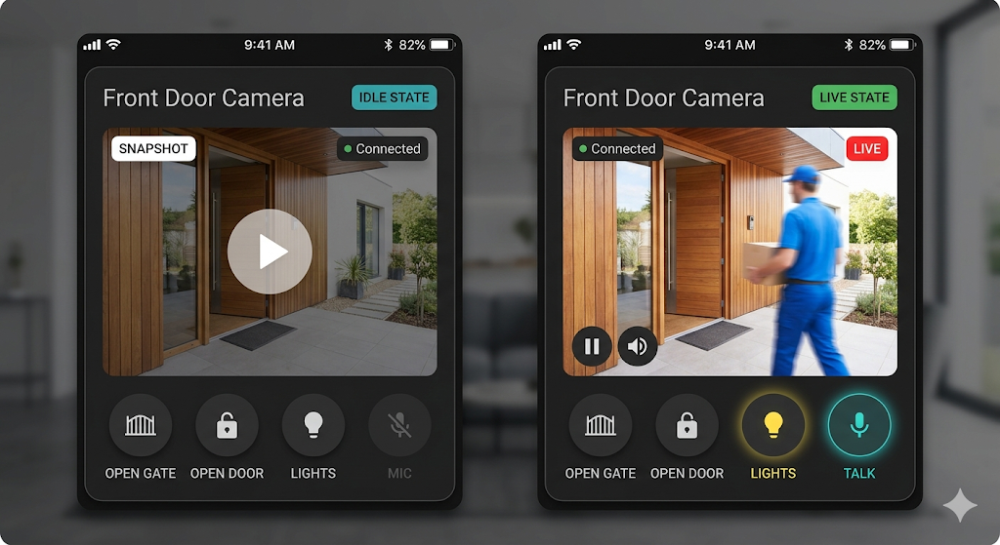

Basato sul mockup Gemini. Seleziona gli elementi che vuoi nella card finale.

Seleziona tutti quelli che ti piacciono
"Front Door Camera" — configurabile via YAML. Utile per distinguere più card.
Verde "Connected" in idle, rosso "LIVE" durante lo streaming. Indica lo stato della connessione.
Click per avviare lo stream. Non auto-connect al caricamento della dashboard.
Mostra l'ultimo snapshot/vignette quando il video non è attivo. Configurabile via poster_entity.
Play/pause e volume sovrapposti al video, appaiono al hover/tap.
Icona + label per ogni azione. Configurabili via YAML. Si illuminano quando attivi.
Come Lights (giallo) e Talk (verde) nel mockup. Feedback visivo immediato.